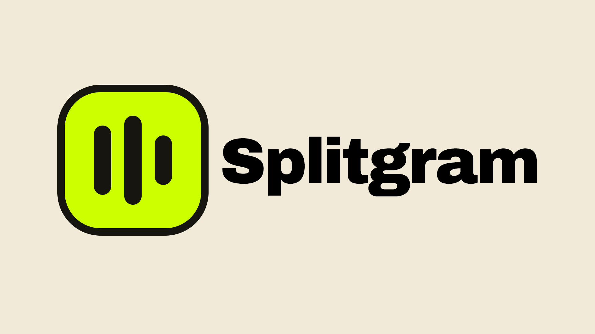

Splitgram
隣り合う画像に重なりを持たせ、プロフィールでつなげる画像分割ツール。

01_design/
表示比率が変わっても、
プロフィールでつながる。
4:5の投稿画像は、プロフィールでは左右が隠れて3:4になる。そのまま分割すると継ぎ目がズレるため、隣り合う画像の切り出し範囲を重ねた。中央の3:4領域を並べると、ひと続きの構図になる。
同じ3枚。表示する範囲が変わると、つながる。
比較用ビジュアルで、中央を3:4に切り取る表示を再現しています。
分割前の元画像を見る
02_product/
必要な機能を無料で。
公開品質の書き出しをProに。
画像分割とプレビューは無料で使える。無料版は720pxの書き出し、Proでは透かしなし・1080×1350pxのフル解像度書き出しに対応。日本語と英語の表示切り替えも備えている。
01Carousel & Grid横分割・縦横グリッド
02Visual Adjustment移動・ズーム・ガイド
03Local Exportブラウザ内で画像を処理
04Pro Export透かしなし・フル解像度
このページはGitHubで公開されている実装をもとに構成しています。利用者数や改善率などの成果指標は未掲載です。
live product
Splitgramを使ってみる
実際の分割・プレビュー・書き出し操作は公開アプリで確認できます。